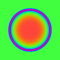

Acknowledgments¶
{kind=link}

Maintainers¶
The LibTIFF software was written by Sam Leffler while working for Silicon Graphics.
Silicon Graphics has seen fit to allow us to give this work away. It is free. There is no support or guarantee of any sort as to its operations, correctness, or whatever. If you do anything useful with all or parts of it you need to honor the copyright notices. It would also be nice to be acknowledged.
LibTIFF as been maintained by cast of others since 1999.
The persons currently actively maintaining and releasing libtiff are:
Even Rouault
Significant maintainers in the past (since the 3.5.1 release) were:
Joris Van Damme
Lee Howard
Contributors¶
The LZW algorithm is derived from the compress program (the proper attribution is included in the source code).
The Group 3 fax stuff originated as code from Jef Poskanzer, but has since
been rewritten several times. The latest version uses an algorithm from
Frank Cringle -- consult libtiff/mkg3states.c and
libtiff/tif_fax3.h for further information.
The JPEG support was written by Tom Lane and is dependent on the excellent work of Tom Lane and the Independent JPEG Group (IJG) who distribute their work under friendly licensing similar to this software. Joris Van Damme implemented the robust Old JPEG decoder (as included in libtiff since version 3.9.0, there was another Old JPEG module in older releases, which was incomplete and unsuitable for many existing images of that format).
JBIG module was written by Lee Howard and depends on JBIG library from the Markus Kuhn.
Many other people have by now helped with bug fixes and code; a few of the more persistent contributors have been:
Bjorn P. Brox |
Dan McCoy |
J.T. Conklin |
Richard Minner |
Frank D. Cringle |
Richard Mlynarik |
Soren Pingel Dalsgaard |
Niles Ritter |
Steve Johnson |
Karsten Spang |
Tom Lane |
Peter Smith |
Brent Roman |
Mike Welles |
Frank Warmerdam |
Greg Ward |
Stanislav Brabec |
Roman Shpount |
Peter Skarpetis |
Arvan Pritchard |
Bernt Herd |
Joseph Orost |
Phil Beffery |
Ivo Penzar |
Francois Dagand |
Albert Chin-A-Young |
Bruce A. Mallett |
Dwight Kelly |
Andrey Kiselev |
Ross Finlayson |
Dmitry V. Levin |
Bob Friesenhahn |
Lee Howard |
Joris Van Damme |
Tavis Ormandy |
Richard Nolde |
Even Rouault |
Roger Leigh |
(apologies to anyone that was inadvertently not listed.)